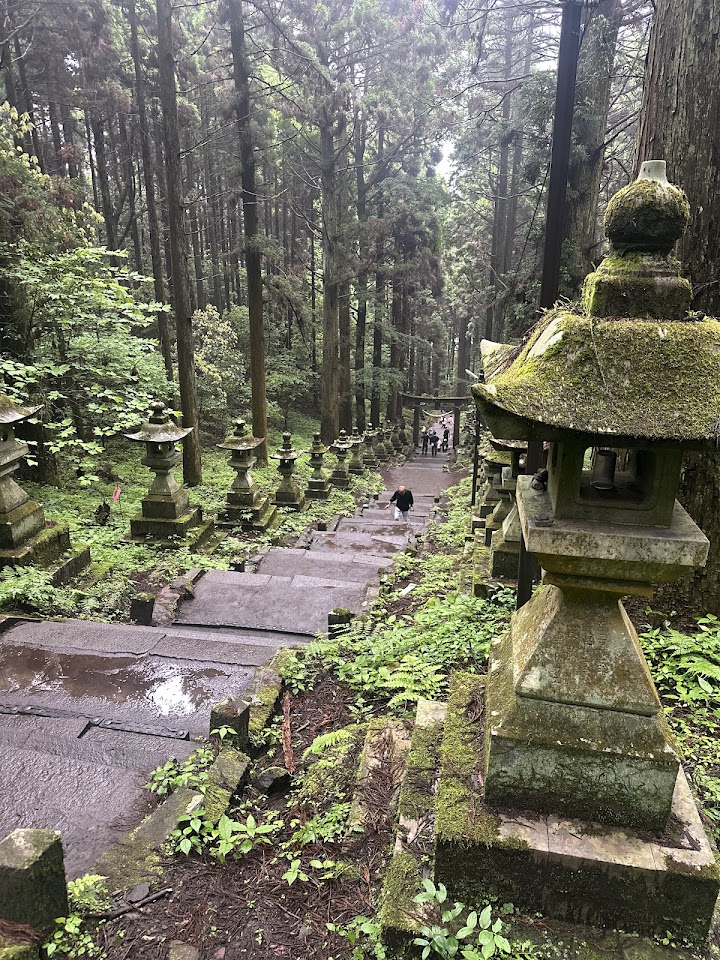
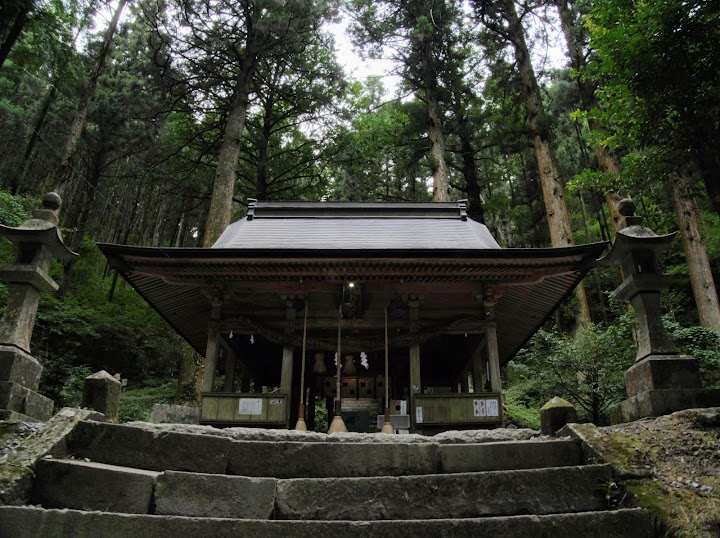
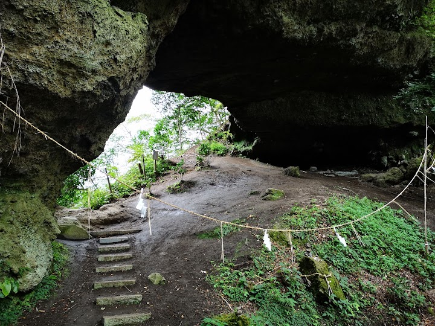
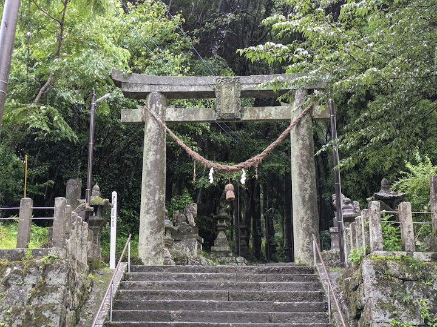
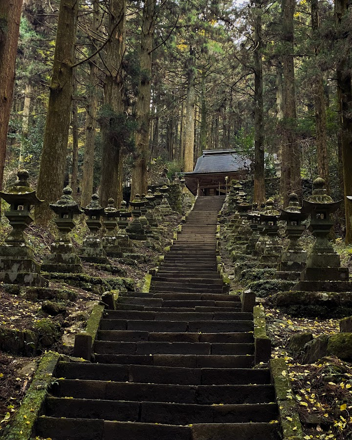

Kamishikimi Kumanoza Shrine
Picturesque Shinto shrine & natural arch, reached by a steep, wooded path lined with stone lanterns.
Open in Google Maps (street view, more photos and reviews there)






Visitor tips on finding it and getting there
Back in March Such a nice place to have a wee walk to the temple it only take us 20 mins and another 10 mins to the top. Surrounding in the forest just offering some kind of pace to ease your mind. Please ready some coins for praying and blessing for luck by throw in the coin box. There is a free parking lots just opposite of the entrance of the path has 3-4 food and drink trucks. Of course the most important thing they have free public toilets inside the park lots. It is free you don’t need any ticket for the walk here
This place is absolutely beautiful! It takes about 10 minutes to reach the temple, but what makes it truly special is the path leading to it If you’d like a goshuin, you’ll need to visit the Takamori Tourism Promotion Organisation. The goshuin are printed rather than handwritten, which is a bit of a shame, but they’re very unique. You’ll have a choice of three different designs (I couldn’t decide, so I ended up getting two, haha!)